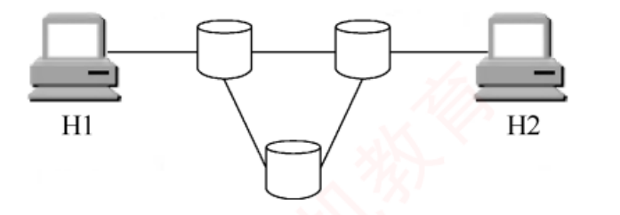

408
408第十巻
第 41 話
五层模型、时延四件套、三种交换的母公式
最后一门。网络只有 25 分，但 2009–2025 每年都跨章考大题。这一话给出全局和最常用的母公式，并把书中「性能指标」放在一起。
其之壹分层
比方
寄快递
应用层写好信（数据），传输层写上房间号（端口），网络层写上城市地址（IP），链路层写上下一站（MAC），物理层就是路上的卡车。每层只和对面同一层「讲话」，实际上是通过下一层服务实现的。
| 层 | 单位 | 协议 | 设备 | 关键地址 |
|---|---|---|---|---|
| 应用 | 报文 | HTTP FTP DNS SMTP | — | — |
| 传输 | 段 / 数据报 | TCP UDP | — | 端口 |
| 网络 | 分组（IP 数据报） | IP ARP ICMP | 路由器 | IP |
| 链路 | 帧 | Ethernet PPP | 交换机 | MAC |
| 物理 | 比特 | — | 集线器 | — |
术式
三个模型
OSI 七层：物理、链路、网络、传输、会话、表示、应用（物链网传会表应）。
TCP/IP 四层：网络接口、网际、传输、应用。
五层教学模型：物链网传应。
表示层：数据格式转换（加密、压缩）。会话层：会话管理、同步。
传输层：第一个端到端的层。
术式
协议、接口、服务
协议：水平的，对等层之间的规则（语法、语义、同步）。
服务：垂直的，下层向上层提供。
接口：相邻层之间，访问服务的地方（SAP）。
PDU=PCI+SDU。上层的 PDU 是下层的 SDU。
其之貳性能指标
术式
时延四件套
发送时延 = 帧长 / 带宽（在发送方）。
传播时延 = 距离 / 信号速度。
处理时延、排队时延。
时延带宽积 = 传播时延 × 带宽（管道能装多少比特）。
RTT：一个来回。
利用率高了时延会暴涨。
咒灵
带宽的两个意思
物理层的带宽是 Hz，网络层的带宽是 b/s。1 kb/s = 10³ b/s（通信用十进制），1 KB = 2¹⁰ B（存储用二进制）。发送时延用 8 位一字节算。
其之參三种交换
| 交换 | 连接 | 独占 | 方式 | 优缺点 |
|---|---|---|---|---|
| 电路 | 先建立 | 是 | 整条线路占用 | 时延小，利用率低 |
| 报文 | 否 | 否 | 存储转发整条报文 | 灵活，时延大 |
| 分组 | 否 | 否 | 存储转发分组 | 主流 |
下面这个公式是分组交换的母公式：
术式
分组交换总时间
T = (k + m − 1) · r + (k 跳的传播)
k：链路段数（数链路不数设备）；m：分组个数；r：每个分组一跳的发送时延。
报文交换：k × (L / C)。
▣ 为什么是 k+m−1
先数段数：k = 路由器数 + 1。
| 分组 | 第 1 段完成 | 第 2 段完成 | 第 3 段完成 |
|---|---|---|---|
| 分组 1 | r | 2r | 3r |
| 分组 2 | 2r | 3r | 4r |
| 分组 m | mr | (m+1)r | (m+2)r |
最后一个分组到达的时刻，就是总时间：(k+m−1)·r，k=3 时 (m+2)·r。
领域展开
分层：物链网传应；设备：集线器 1、交换机 2、路由器 3。
时延：发送 = 长度 / 带宽；传播 = 距离 / 速度。
分组交换：T = (k+m−1)·r，k 是链路段数。
其之肆实战
真题火力｜2009–2025 这一话的考点出现 14 题，覆盖 13/17 年空白 = 没考 · 网点 = 1 题 · 黑 = 2 题 · 红 = 3 题及以上（由题库逐题统计）
09
10
11
12
13
14
15
16
17
18
19
20
21
22
23
24
25
2009實戰端到端服务的起点层
在 OSI 参考模型中，自下而上第一个提供端到端服务的层是（ ）。
在 OSI 参考模型中，传输层是自下而上第一个提供端到端服务的层，通过端口号实现应用进程间的逻辑通信。数据链路层仅负责相邻节点（如交换机、路由器等中间设备）之间的通信，而网络层提供主机到主机的通信，不提供面向应用进程的服务。
再深一层
选 B。题眼是"第一个"——会话层和应用层也是端到端的，但它们不是第一个。
⭐ 1.3 疑难点 2 把这条讲得最透：
自下而上数： 1 物理层 ✗ 比特流 2 数据链路层 ✗ 节点到节点 3 网络层 ✗ 主机到主机 4 传输层 ✅ 第一个「端到端」 5 会话层 ✓（也是端到端，但不是第一个） 6 表示层 ✓ 7 应用层 ✓📌 为什么"端到端"从传输层才开始："端"指的是应用进程的端口——而端口号是传输层才引入的概念，网络层只有 IP 地址（只能定位到主机，定位不到进程）。没有端口就无法区分"哪两个进程在通信"，也就谈不上端到端。
⭐ 1.3 疑难点 2 把这条讲得最透：
点到点通信：主机到主机的数据传递，不涉及具体应用进程
└ 只负责把数据从一台机送到另一台机，
但无法识别是哪两个进程在通信
端到端通信：建立在点到点通信之上，通过多段点到点链路串联，
最终实现不同主机上应用进程之间的通信
└ 这里的「端」＝应用进程的端口「端到端真正面向的是用户程序之间的交互，而不仅仅是机器之间的连接」——书上原话。2019實戰OSI 第 5 层的功能
OSI 参考模型的第 5 层（自下而上）完成的主要功能是（ ）。
OSI 参考模型自下而上的第 5 层为会话层，主要功能是管理和协调不同主机上各种进程之间的通信（对话），即负责建立、管理和终止应用程序间的会话。
再深一层
选 C。本题只考一件事：会不会数层号。数对了就是送分题。
⚠️ "自下而上"必须读到——若按自上而下数，第 5 层就成了网络层，答案会变成 B。2019 这道题贴心地在括号里写明了方向，但不是每年都会写。
⭐ 本章按层号出的真题一共两道，都要数层：2019 问"第 5 层"（答会话层）· 2016 问"最高功能层分别是几"（答 3、2、1）。考前把"物链网传会表应"对应 1–7 写一遍，这类题就是白给。
自下而上：1 物理 → 2 数据链路 → 3 网络 → 4 传输
→ 5 会话 → 6 表示 → 7 应用📌 四个选项恰好是四个不同层的功能，等于一题查四层：| 选项 | 属于 | 层号 |
|---|---|---|
| A 差错控制 | 数据链路层／网络层／传输层 | 2/3/4 |
| B 路由选择 | 网络层 | 3 |
| C 会话管理 | 会话层 | 5 ✅ |
| D 数据表示转换 | 表示层 | 6 |
⭐ 本章按层号出的真题一共两道，都要数层：2019 问"第 5 层"（答会话层）· 2016 问"最高功能层分别是几"（答 3、2、1）。考前把"物链网传会表应"对应 1–7 写一遍，这类题就是白给。
2013實戰应用层的相邻层
在 OSI 参考模型中，功能需由应用层的相邻层实现的是（ ）。
在 OSI 参考模型中，应用层的相邻下层是表示层（第 6 层），负责处理与数据表示相关的问题。其主要功能包括数据字符集转换、数据格式转换、文本压缩以及加密与解密等。
应用层的相邻层是表示层，负责格式转换。
再深一层
选 B。两步走：先定位"相邻层"是谁，再答那层的功能。
⚠️ "相邻层"严格说有上下两个，但应用层是最高层，没有上层，所以只能是下面的表示层。若题目问的是"传输层的相邻层"，就要考虑会话层和网络层两个。
🔗 与 2014 真题是一对：那题问"直接为会话层提供服务的是"（答传输层，会话层的下层）。两题都在考"某层的邻居是谁"，方向一上一下。记住：提供服务的一定是下层，所以"为 X 提供服务"＝X 的下一层。
应用层（7）的相邻层 → 表示层（6） 表示层的功能 → 数据格式转换 ✅📌 四个选项分别对应第 5、6、3、4 层，是一张"层功能速查卡"：
| 选项 | 功能 | 层 | 与应用层的距离 |
|---|---|---|---|
| A 对话管理 | 会话管理 | 会话层 5 | 隔了一层 |
| B 数据格式转换 | 表示 | 表示层 6 | 相邻 ✅ |
| C 路由选择 | 选路 | 网络层 3 | 隔了三层 |
| D 可靠数据传输 | 可靠传输 | 传输层 4 | 隔了两层 |
🔗 与 2014 真题是一对：那题问"直接为会话层提供服务的是"（答传输层，会话层的下层）。两题都在考"某层的邻居是谁"，方向一上一下。记住：提供服务的一定是下层，所以"为 X 提供服务"＝X 的下一层。
2014實戰层间服务关系
在 OSI 参考模型中，直接为会话层提供服务的是（ ）。
在 OSI 参考模型中，各层直接为其上一层提供服务，而会话层的下一层是传输层。
再深一层
选 C。一句话定生死：「提供服务的永远是下层」。
⭐ 把三个近义问法的答案对照记住，就不会被绕进去：
🔗 与 2013 真题正好互为镜像：2013 问"应用层的相邻层"（向下找到表示层），2014 问"为会话层提供服务的"（向下找到传输层）。王道把这两道相隔一年的真题放在同一节，就是让你建立"服务永远自下而上"的条件反射。
会话层（5） ↑ 提供服务 传输层（4） ✅📌 本题最大的陷阱是选 B（表示层）——表示层确实与会话层相邻，但它在会话层上面，是会话层的服务用户，不是提供者。相邻 ≠ 提供服务，方向必须分清。
⭐ 把三个近义问法的答案对照记住，就不会被绕进去：
| 问法 | 指向 | 会话层的答案 |
|---|---|---|
| 「为 X 提供服务的是」 | X 的下层 | 传输层 ✅ |
| 「X 为谁提供服务」 | X 的上层 | 表示层 |
| 「X 的相邻层」 | 上下两个 | 传输层 + 表示层 |
2016實戰网络设备的最高功能层
在 OSI 参考模型中，路由器、交换机（Switch）、集线器（Hub）实现的最高功能层分别是（ ）。
集线器（Hub）是多端口中继器，工作在物理层（第 1 层）；以太网交换机（Switch）是多端口网桥，工作在数据链路层（第 2 层）；路由器是网络层设备，最高工作在第 3 层。因此，三者实现的最高功能层分别为网络层、数据链路层和物理层。
再深一层
选 C（3、2、1）。三个设备三个层次，这张对应表是 408 网络最基础的常识，必须秒答：
📌 "最高功能层"这个措辞值得注意——路由器不是"只工作在第 3 层"，它同时也做第 1、2 层的事（收帧、解封装），只是它的能力上限到第 3 层。所以问"最高功能层"答 3，问"工作在哪些层"答 1、2、3。
⭐ 图 1.12 已经把这道题的答案画出来了：OSI 层次结构图里，中间的中继系统只画了下三层（物理层、数据链路层、网络层），说明网络中间设备最多做到第 3 层——这也解释了为什么路由器没有传输层实体、为什么传输层才是"端到端"的起点。
🔗 顺带记住第 3 章会用到的两个域：
| 设备 | 本质 | 层 | 看什么地址转发 | 隔离什么 |
|---|---|---|---|---|
| 路由器 | 网络层设备 | 3 | IP 地址 | 冲突域 + 广播域 |
| 交换机 | 多端口网桥 | 2 | MAC 地址 | 冲突域（不隔离广播域） |
| 集线器 | 多端口中继器 | 1 | 不看地址，广播出去 | 都不隔离 |
⭐ 图 1.12 已经把这道题的答案画出来了：OSI 层次结构图里，中间的中继系统只画了下三层（物理层、数据链路层、网络层），说明网络中间设备最多做到第 3 层——这也解释了为什么路由器没有传输层实体、为什么传输层才是"端到端"的起点。
🔗 顺带记住第 3 章会用到的两个域：
冲突域：会互相碰撞的范围 —— 交换机每个端口一个，集线器全网一个 广播域：广播帧能到达的范围 —— 只有路由器能隔离（或 VLAN）
2017實戰封装开销与传输效率
假设 OSI 参考模型的应用层欲发送 400B 的数据（无拆分），除物理层和应用层外，其他各层在封装 PDU 时均引入 20B 的额外开销，则应用层的数据传输效率约为（ ）。
OSI 参考模型共 7 层，除了物理层和应用层，中间 5 层每层引入 20B 开销，共增加 100B 开销。原始数据为 400B，总传输量为 500B，故传输效率为 400B÷500B = 80%。
五层都要加头，除了物理和应用，共 5 层加 20B：400/(400+100)=80%。
再深一层
选 A。本题唯一的坑是"数清楚有几层要加开销"：
四个选项就是 5/4/3/2 层的一条等差链——出题人非常清楚考生会在"数几层"上翻车。
⚠️ 为什么物理层和应用层不加：
🔗 若换成 TCP/IP 四层模型怎么办：应用层不加、网络接口层与网际层与传输层各加 ⟹ 只有 3 层加开销。所以这类题必须先看清题目说的是 OSI 还是 TCP/IP。
OSI 共 7 层：应用 表示 会话 传输 网络 链路 物理
✗ ✓ ✓ ✓ ✓ ✓ ✗
└ 除去首尾两层，中间 5 层各加 20B ＝ 100B
效率 ＝ 400 ÷ (400 + 100) ＝ 400 ÷ 500 ＝ 80%📌 三个干扰项对应三种"数错层数"：| 选项 | 反推的开销 | 数成了几层 |
|---|---|---|
| 83% | 400/480 → 80B | 4 层（又把表示层或会话层排除了） |
| 87% | 400/460 → 60B | 3 层（只算传输/网络/链路） |
| 91% | 400/440 → 40B | 2 层 |
⚠️ 为什么物理层和应用层不加：
物理层 ： 没有下一层，不封装（见 1.2.1 习题「不参与封装的是物理层」） 应用层 ： 那 400B 本来就是应用层要发的数据本身，是「基准」不是「开销」题干说"应用层欲发送 400B"，所以应用层的首部若存在也已算在这 400B 里了。
🔗 若换成 TCP/IP 四层模型怎么办：应用层不加、网络接口层与网际层与传输层各加 ⟹ 只有 3 层加开销。所以这类题必须先看清题目说的是 OSI 还是 TCP/IP。
2010實戰分组交换的时延分析 · 存储转发流水线
在下图所示的采用「存储-转发」方式的分组交换网络中，所有链路的数据传输速率为 100Mb/s，分组大小为 1000B，其中分组头大小为 20B。若主机 H1 向主机 H2 发送一个大小为 980000B 的文件，则在不考虑分组拆装时间和传播延迟的情况下，从 H1 发送开始到 H2 接收完为止，需要的时间至少是（ ）。

H1 与 H2 之间由三台交换机构成，最短路径经过 2 台交换机（共 3 段链路）
分组大小为 1000B，其中首部占 20B，故每个分组携带的有效数据为 980B。文件总长为 980000B，需划分为 1000 个分组；每个分组含首部共 1000B，因此共需传输的数据量为 10⁶B。由于所有链路的传输速率相同，沿最短路径传输时延最小，而最短路径经过 2 个交换机（共 3 段链路）。H1 发送完所有分组的时间为 10⁶×8b÷100Mb/s = 80ms，此时最后一个分组刚离开 H1，该分组还需依次经过 2 个交换机（再通过 2 段链路）才能到达 H2，每段链路的传输时延为 r = 1000×8b÷100Mb/s = 0.08ms。因此，H2 接收完全部数据的时间为 80ms + 2r = 80.16ms。【另解】分组交换的传输过程类似于流水线，各存储转发设备可同时处理不同的分组，就如同流水线中的各段并行工作。由于所有链路的速率相同，每段链路的传输时延 r = 1000×8b÷100Mb/s = 0.08ms，最短路径有 3 段链路。H2 接收完全部数据的时间为 3r + (m−1)r = 3×0.08ms + (1000−1)×0.08ms = 80.16ms。
每个分组带 980 B 数据，m = 1000 个；每个 1000 B，r = 80 μs；经过 2 个交换机，k = 3 段。T = (3+1000−1) × 80 μs = 80.16 ms。
再深一层
选 C。本题是母公式 k·r+(m−1)·r 的原型题，也是 2013/2023/2025 三年的共同祖先。🐍 Python 事件级排程复算（逐分组逐链路模拟，不套公式）：
⚠️ "最短路径"三个字必须读到：图里下方那台交换机构成了一条更长的路，走它就是 4 段链路。题干说"至少"，就是让你走最短路。
⭐ 两种解法的对应关系（书上都给了，建议记第二种）：
分组数 m ＝ 980000B ÷ 980B ＝ 1000 （用有效数据算！） 每段发送时延 r ＝ 1000B×8 ÷ 100Mb/s ＝ 0.08ms 链路段数 k ＝ 3 （2 台交换机 ⟹ 3 段） 模拟结果：最后一个分组到达 H2 的时刻 ＝ 80.1600 ms ✅ 与书答一致📌 本题有两个独立的坑，各挡掉一个选项：
| 坑 | 踩了会选 | 正解 |
|---|---|---|
| 用 1000B 而非 980B 算分组数 | 980 个分组 → 数偏小 | 分组数按「有效数据」算：980000÷980＝1000 |
| 把最后一跳忘了 | A. 80ms（只算 H1 发完） | 还要 +2r 才到 H2 |
| 只补一跳 | B. 80.08ms | 剩 2 段链路，补 2r |
| 误当 4 段链路 | D. 80.24ms | 3 段（数链路不数设备） |
⭐ 两种解法的对应关系（书上都给了，建议记第二种）：
解法一：80ms（H1 全发完）+ 2r（末分组余下 2 跳） 解法二：3r（首分组灌满流水线）+ 999r（其余分组鱼贯而出） 两者相等：1000r + 2r ＝ 3r + 999r ＝ 1002r ＝ 80.16ms
2013實戰报文交换与分组交换的时延对比
主机甲通过一个路由器（存储转发方式）与主机乙互连，两段链路的数据传输速率均为 10Mb/s，主机甲分别采用报文交换和分组大小为 10kb 的分组交换向主机乙发送一个大小为 8Mb（1M = 10⁶）的报文。若忽略链路传播延迟、分组头开销和分组拆装时间，则两种交换方式完成该报文传输所需的总时间分别为（ ）。
传输路径为：甲—路由器—乙。在题中未明确说明的情况下，不考虑排队时延和处理时延，只考虑发送时延和传播时延；本题已忽略传播时延，因此只计算报文交换和分组交换的发送时延。报文交换：采用整报文传输，报文大小为 8Mb。每个节点（包括主机甲和路由器）在转发该报文前需要完整接收，因此需经历两次发送过程：甲向路由器发送报文，发送时延 T = 8Mb÷10Mb/s = 0.8s；路由器向乙转发该报文，同样需 0.8s。总时延为 1.6s，即 1600ms。分组交换：分组大小为 10kb，忽略分组头开销，每个分组携带 10kb 数据。报文总长为 8Mb，分组数 m = 8Mb÷10kb = 800。参考 2010 年真题的流水线思路：甲与乙通过一个路由器相连，构成 2 段链路（2 个流水段），每段链路的发送时延 r = 10kb÷10Mb/s = 1ms。第一个分组从甲发出后，需经过 2 段链路才能到达乙，耗时 2r；此后流水线满载，每隔 r 时间就有一个分组到达乙。因此，传输 m = 800 个分组所需的总时间为 t = 2r + (m−1)r = 2 + (800−1)×1 = 801ms。
报文：2 段 × 800 ms = 1600 ms；分组：(2+800−1) × 1 ms = 801 ms。
再深一层
选 D。本题是"流水线到底省了多少"的量化标本：1600ms → 801ms，几乎砍半。🐍 Python 排程复算：
🔗 与 2010 题的差别：2010 是 k=3（2 台交换机），本题是 k=2（1 台路由器）。两题共用同一个公式，只是 k 不同。数链路段数＝设备数+1，这是唯一要小心的地方。
报文交换： 2 段 × (8Mb ÷ 10Mb/s) ＝ 2 × 0.8s ＝ 1600ms ✅
分组交换： m ＝ 8Mb ÷ 10kb ＝ 800 个，r ＝ 10kb÷10Mb/s ＝ 1ms
k·r + (m−1)·r ＝ 2×1 + 799×1 ＝ 801ms ✅📌 为什么报文交换的两段是"完全串行"、分组交换却能"重叠"——差别只在一个存储转发单元有多大：报文交换：单元＝整报文8Mb ⟹ 路由器要等 0.8s 才收完 ⟹ 第2段全程干等 分组交换：单元＝1个分组10kb ⟹ 等 1ms 就能转 ⟹ 两段全程并行⚠️ 800ms 与 801ms 只差 1ms，而这 1ms 正是"首分组多走的那一跳"：选项 A/C 里的 800ms 就是漏掉这一跳的产物（只算了 m·r ＝ 800×1）。凡是选项里出现"整数 vs 整数+1"的配对，考的一定是首单元灌流水线的那几跳。
🔗 与 2010 题的差别：2010 是 k=3（2 台交换机），本题是 k=2（1 台路由器）。两题共用同一个公式，只是 k 不同。数链路段数＝设备数+1，这是唯一要小心的地方。